Программа предназначена для численного нахождения минимума функции методом дихотомии, которая задана ввиде f(x) - g(x). Значения функций f(x) и g(x) задаются ввиде точек. Промежуточные значения функции находятся интерполяцией с использованием метода полиномов Лагранжа.
Для того, что бы задать точки, которые являются значением функций, необходимо ввести желаемые значения в заданые поля. Точки для первой функции записываются в поля под текстом "Точки 1", для второй функции - под текстом "Точки 2" (Рис.1). Что бы добавить записаные точки нажмитекнопку "Добавить". Заданые значения записываются в таблицу, находящуюся под кнопками "Добавить" и "Удалить"(Рис.2).
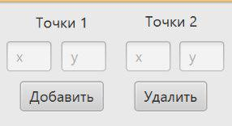
Рис.1 - Поля для добавления точек.
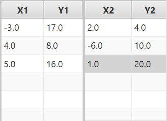
Рис.2 - Таблица с задаными точками.
Для того, что бы удалить заданые точки, необходимо выделить строку с необходимыми значениями в таблице и нажать на кнопку "Удалить".(Рис.3)
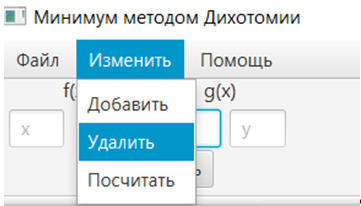
Рис.3 - Удаление точек.
Для того, что бы задать интервал, в котором будет находится минимум функции необходимо записать желаемые значения в поля под текстом "Интервал". В первое поле записывается начало интервала, во второе - конец интервала. Для задания точности подсчета минимума необходимо записать желаемое значение в поле под текстом "Точность"(Рис.4). Для корректной работы программы поля "Интервал" и "Точность" не должны оставаться пустыми.
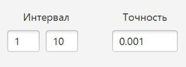
Рис.4 - Поля для добавления интервала и точности.
После задания всех требуемых данных для выполнения работы программы необходимо нажать на кнопку "Посчитать". В результате работы программы на области с координатами отображается график результирующей функции, а также минимум этой функции, который выводится в поле, рядом с надписью "Минимум"(Рис.5).
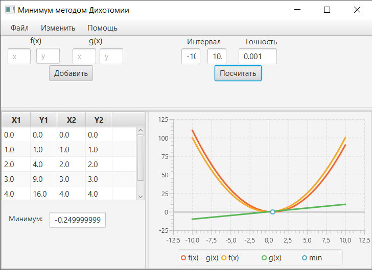
Рис.5 - Результат выполнения программы(минимум найден).
Функционал программы позволяет сохранять введенные пользователем данные в файл формата xml для подальшей работы с ним. Для того, что бы выполнить сохранение данных необходимо окрыть вкладку "Файл". В выпадающем меню выбрать "Сохранить как"(Рис.6.1). В открывшемся окне выберите место сохранения файла и впишите его название. После выполненых действий нажмите кнопку "Сохранить"(Рис.6.2). Теперь введенные точки, интервал и точность сохранены в отдельном файле.
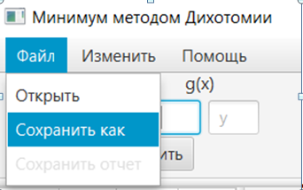
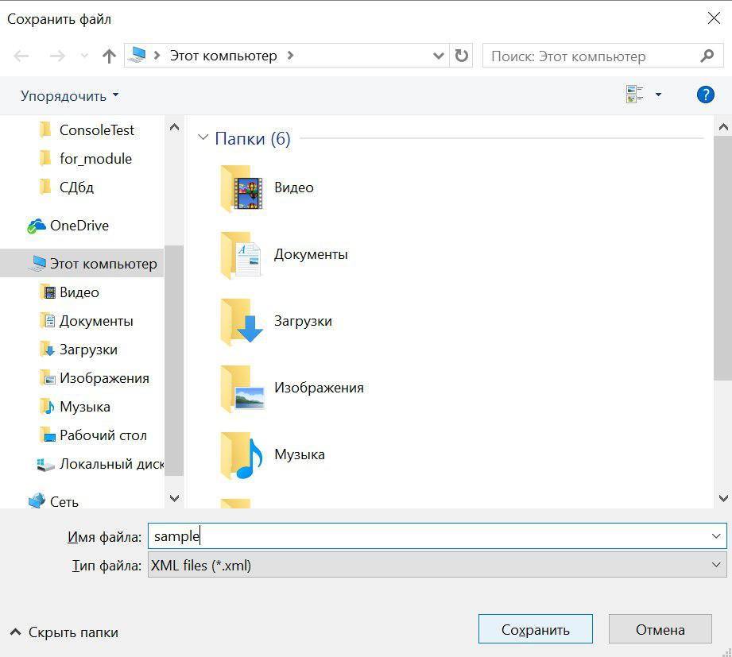
Рис.6.2 - Сохранение файла.
Для открытия ранее сохраненного файла необходимо окрыть вкладку "Файл". В выпадающем меню выбрать "Открыть"(Рис.8.1). В открывшемся окне выберите место хранения сохраненного файла. Выберите файл и нажмите кнопку "Открыть"(Рис.8.2). В резульате все данные, записаные в файл формата xml, будут перенесены в программу для подальшей работы с ними.
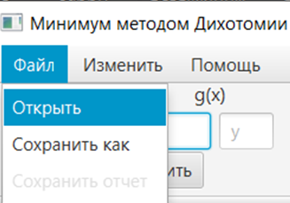
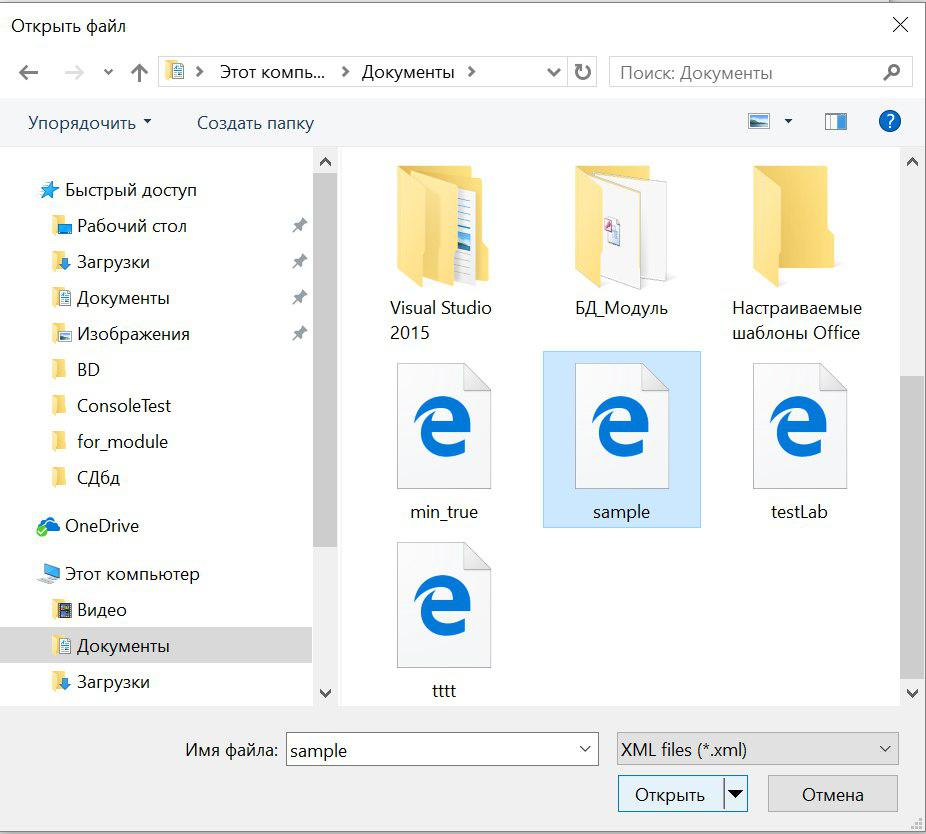
Рис.7.2 - Открытие файла.
Фуекция генерации отчета доступна только после успешно произведенного вычисления. Для генерации отчета в формате html откройте вкладку "Файл". В выпадающем меню выбрать "Сохранить отчет"(Рис.9.1). В открывшемся окне выберите место сохранения отчета и впишите его название. После выполненых действий нажмите кнопку "Сохранить"(Рис.9.2). В результате вы получите отчет, в который щаписаны все входные данные, а также выведен результат.
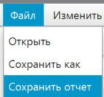
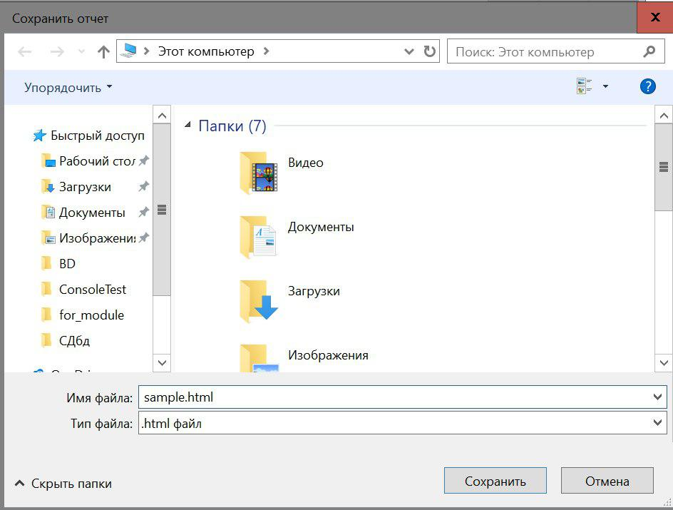
Рис.8.2 - Сохранение отчета.
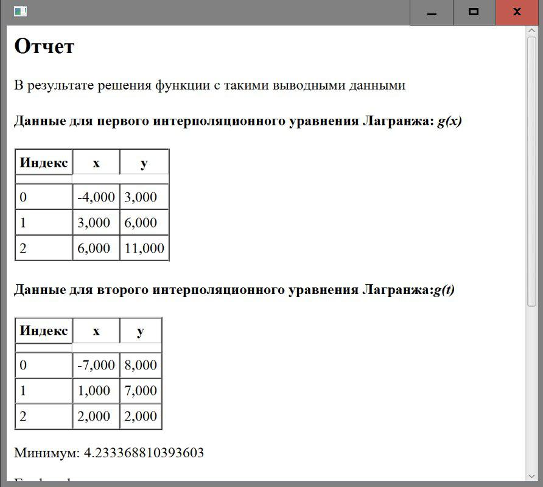
Рис.8.3 - Сохранение отчета.